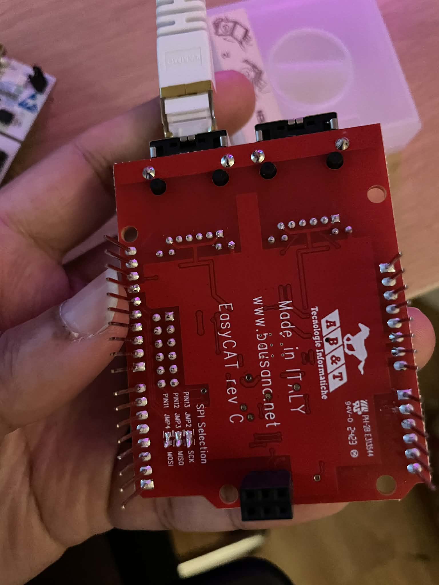
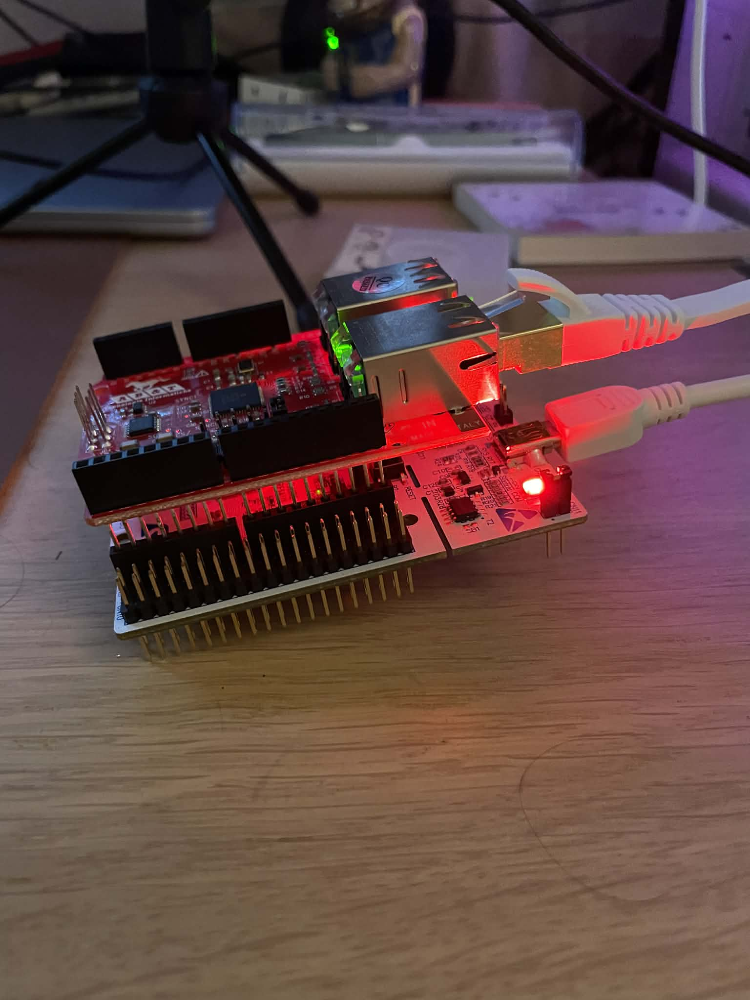
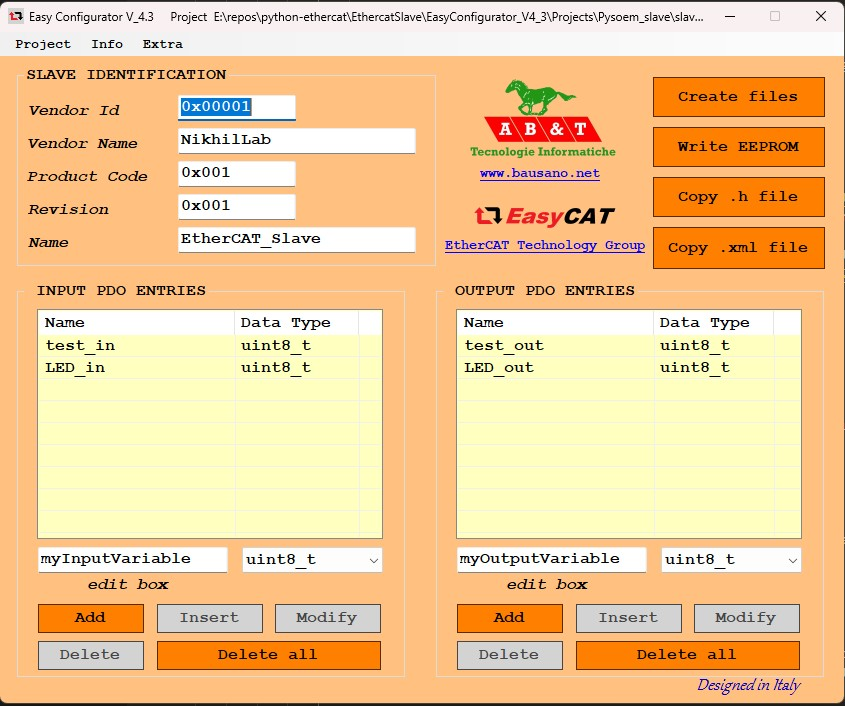
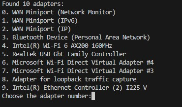
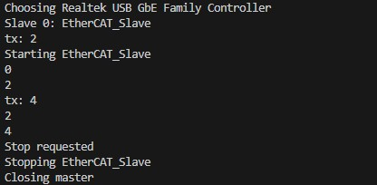

A Beginner's Guide to Using and Programming EtherCAT
It's really useful!
Background
There are many different communication methods in robotics. A commonly used one is CAN/CANopen, found in everything from cars to humanoids. However, there is another protocol that is much faster, more flexible, and more efficient: EtherCAT. It can run at speeds up to 100 Mbps (whereas CAN typically ranges from 1-8 Mbps), allows for any topology, and utilizes more than 90% of the available bandwidth.
What makes it really interesting is how it handles data. An EtherCAT network sends a single frame through every node in the chain. As the frame passes through a slave node, the node identifies the bits meant for it, reads them, and inserts its response back into the frame simultaneously. The frame never stops or waits for a node to copy data, it just keeps moving. That’s how it achieves such high speeds. The best way to visualize it is to watch this video from the EtherCAT Wikipedia page:
There are 2 ways to communicate data over EtherCAT. The first method is called PDO or Process Data Object. This is shown in the video above. You can think of it as the nervous system of the robot, it is real-time communication for cyclic data. This is where you would read things like current position, current velocity, current, desired position, etc. PDOs are set during the initialization and don't require addresses or acknowledgements since everything is agreed upon between the master and slaves from the start. The other method is called SDO or Service Data Object. This is a method to read or write a single ethercat register at a time. You would normally use this if you want to change a config or something else like PID parameters. SDOs require addresses and acknowledgements.
So, if EtherCAT is so useful, why isn't it used everywhere? Well, it is notoriously difficult to set up correctly and takes significant effort to get working. Unfortunately, there isn't a wealth of beginner-friendly documentation available unless you want to dive deep into Beckhoff's (the inventor of EtherCAT) technical manuals. It is equally frustrating if you want to build custom EtherCAT devices, as information on that is even scarcer.
I decided to create this guide so that others don't have to go through the same hell I did to get it working.
Parts List
- A LAN9252 breakout board, I recommend the Bausano EasyCAT Shield for Arduino
- STM32 Nucleo-64 board (same form factor as an Arduino Uno); a Nucleo-144 also works
- Ethernet cable
- Ethernet adapter (or a free Ethernet port on your computer)
- Link to the repo
- Install Npcap
- Install the PySOEM library for Python
Making an EtherCAT Slave
1. Setup
The LAN9252 communicates with a microcontroller over SPI. If you bought the EasyCAT Shield, it has a 3x2 SPI connector that is used on Arduinos. STM32 Nucleo boards don't have this connector but luckily, all you need to do is solder 3 jumpers under the board to route the SPI signals to Pin D11 (MOSI), Pin D12 (MISO), and Pin D13 (SCK). There is also a jumper on the top side that allows you to pick which CS pin you are using for the LAN chip. I chose Pin D10.

Then, all you need to do is hook the ethernet cable in to the IN port and connect to the board using your mini-usb cable and you can start programming it!

2. Configuring your PDOs in the LAN9252
Now that everything is set up, we will need to first decide on what we want to send and read over PDOs with this slave. Luckily, Bausano also made a configurator tool to make this easy for us! It is called the EasyConfigurator, and I added it to the repo as well in the EthercatSlave folder. Go to the Exe folder and start the EasyCAT_Config_GUI program.

The GUI looks a little old, but it is great! You can set all the IDs and names, as well as your input and output PDOs. **Reminder:** inputs and outputs are always defined from the perspective of the EtherCAT Master. To use the GUI:
- Name and save the project; it will create a .prj file that you can load later and edit the PDOs if you want to
- Add all your PDO values and pick the data sizes
- Click on the "Create Files" button and the GUI will make a .BIN, .H, and .XML file for you
- Click on the "Write EEPROM" button, but MAKE SURE THAT THERE ARE NO OTHER ETHERCAT DEVICES IN THE CHAIN. Now, you can write to the EEPROM of the LAN9252 and save these PDO mappings to it.
- Copy the .H file to add to the firmware we will now write
- You can use the .XML file if you want to read the boards in TwinCAT (Beckhoff's EtherCAT software), but I don't want to download it onto my PC, to be honest
The project shown above is called slave_1.prj. That project and its associated files are in EasyConfigurator_V4_3\Projects\Pysoem_slave
3. Writing the STM32 Firmware
We are almost ready to start using our EtherCAT device, but we just need to program the microcontroller. Bausano has a bunch of code if you want to just use Arduino libraries or Raspberry Pis, but I wanted to take it a step further and actually use the STM32 toolchain and IDE. Luckily, converting the Bausano Arduino library to work on an STM32 wasn't that hard (with a little help from Gemini). You can find it in the EthercatSlave_firmware folder.
This example works with the associated EtherCAT master (which we will get to next), but if you want to have it run on your own slave you will need to:
- Put the .H file that the EasyConfigurator GUI created into the Core/Inc folder (you can also remove the slave_1.h file). This .h file contains your input and output buffers.
- Include the .H file in the Ethercat.h file in the include section at the top
- Edit the code in the while loop in main.c to do the tasks you want it to do. Right now, it is just setting the value of test_in to equal test_out
Now you are ready to build and upload the firmware to your STM32! Once that is done, we can check if it's working using an EtherCAT master program like TwinCAT or maybe our own software...
Making an EtherCAT Master
So, if you want to just test and see if your devices are working, you can use TwinCAT, but if you want to run a robot over EtherCAT, you will need to write some code. Lucky for you, I wrote an example EtherCAT Master (based on an example from the PySOEM docs) and EtherCAT Slave code in Python. They are both in their corresponding folders in the repo.
There are many different libraries out there, and they will all probably give similar results. There is one caveat though: if you truly want a real-time system, you will need to ensure that your code is deterministic. For the example I made here, I used Python and the PySOEM library (a Python wrapper of Simple Open EtherCAT Master). While the code cannot be considered real-time, it is a great backbone for making engineering software for R&D purposes since you can easily log and analyze data in Python.
How to use the Python EtherCAT code
You will need to start by installing Npcap or WinPcap to run EtherCAT communication. You will also need to install PySOEM using pip (`pip install pysoem`).
The code starts by asking for which EtherCAT adapter you are using on your computer. This will take some testing, but you should be able to find it.

Then, the code will output all of the slaves it detected and their names. The master will create a slave object for each slave depending on its name and add it to a list. This is in the function `init_slaves()`. Right now, I have added a basic slave class template in `ec_slave.py`. The way it works is that it receives a PySOEM slave object from the master, and then it will read and write to that slave object in separate threads. The master will handle the PDOs, but the PDO data is stored in the PySOEM slave object. To get the data from the slave object, you will first need to configure the `InputPDO` and `OutputPDO` classes to fit your .H file that you added to the firmware earlier. Then the read and write functions can convert them into values that can be understood and used/logged. You also have the ability to do tasks in the `rx_pdo` and `tx_pdo` functions; for now, I am just adding 2 to `test_out`, and the microcontroller should be making `test_in` be the same value.
Before the PDOs start running, we have to get the slaves into operational states and then we can start the PDO thread. The PDO thread is set to run at 100 Hz and it only handles PDOs. Right now, the code will just output `test_out` and `test_in` until there is a keyboard interrupt (Ctrl + C). Then the master and slaves will kill the threads and shut down.

Now, you are ready to work with and design your own EtherCAT devices! Hopefully this tutorial can act as a good starting point.